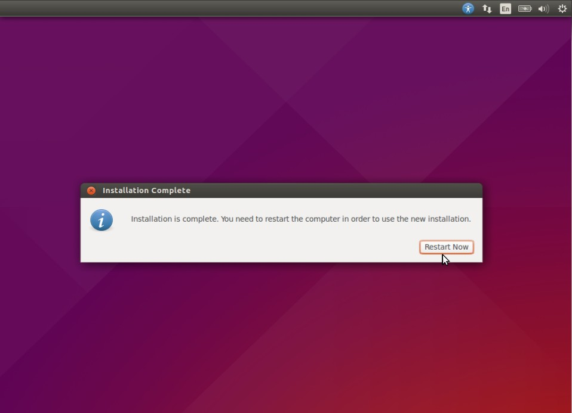

- Step:1 Download the ISO file using the following links
- Step:2 Boot your system with Bootable DVD / USB drive.
- Step:3 Check Install Prerequisite
- -Download updates while installing
- -Install this third-party software
- Step:4 Select the Installation Type
- Step: 5 Select your respective Time Zone
- Step:6 Select your respective Keyboard Layout
- Step:7 Set the Hostname of your system and User credentials that will be used after installation.
- Step:7 As shown below Installation has started.
- Step:8 Login Screen after reboot.
Good news for Ubuntu Linux lovers that the latest version of Ubuntu 15.04 code name “Vivid Vervet” has
been released on 23rd April 2015.
In this post we will discuss how to install Ubuntu 15.04 on Laptop and desktop with Screenshots. Some of
the changes that are noticed in this version are listed below :
Download Ubuntu 15.04 (64-bit)
Download Ubuntu 15.04 (32-bit)
Once the iso file has been downloaded, burn it into DVD or USB drive and make it bootable.
To start the installation click on “Install Ubuntu”

Make sure you have at least 6.6 GB free disk space and if you want to download updates and third party tools at the installation , check both the boxes and make sure system is connected to Internet
If your system has new hard drive and if nothing installed on it , then you can choose the first option
“Erase disk & Install Ubuntu” .
If you want LVM based file system , then use third option “Use LVM with new Ubuntu Installation”
If you want to create customize partition table , the use last option “Some else“
Once the installation is completed, it will ask to restart the Machine.
Click on “Restart Now”
Use the same user and its credentials that we have set during the installation.

We will get below screen after entering the credentials.
Ubuntu 15.04 Installation is Completed Now. Enjoy and have Fun with latest version of Ubuntu Linux üôÇ